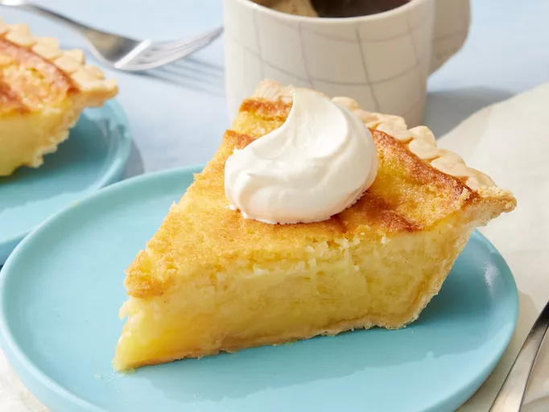

Buttermilk Pie

Description
This old fashioned buttermilk pie recipe features a creamy, custard like filling in the flaky pastry crust.
Theres a reason this tried and trye dessert has stood the test of time
Ingredients
- 3 large eggs
- 1 1/2 cups white sugar
- 1/2 cup butter
- 3 tablespoons all purpose flour
- 1 cup buttermilk
- 1 tablespoon lemon juice
- 1 teaspoon vanilla extract
- 1/8 teaspoon freshly grated nutmeg
- 1 (9 inch) unbaked deep dish pie crust
Directions
- Gather all ingredients> Preheat the oven to 350 degrees F(175 degrees C)
- Beat eggs in a large bowl with an electric mixer until frothy
- Add sugar, butter, and flour; beat until smooth
- stir in buttermilk, lemon juice, vanilla, and nutmeg
- pour into pie shell
- Bake in the preheated oven until center is firm, 40 to 60 minutes
- Remove from the oven and cool for 1 hour before serving
Home